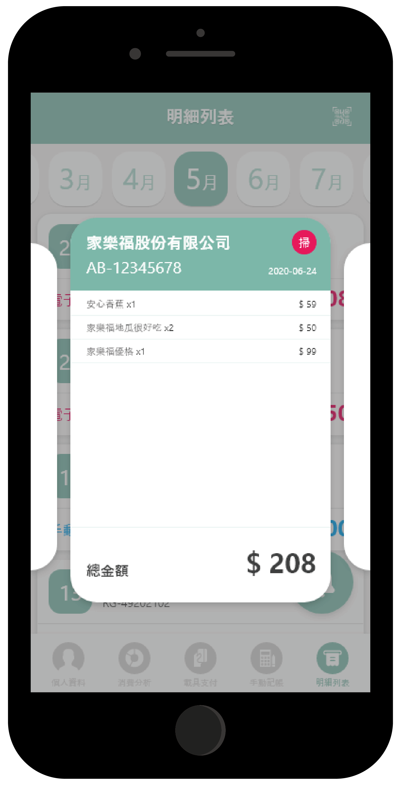
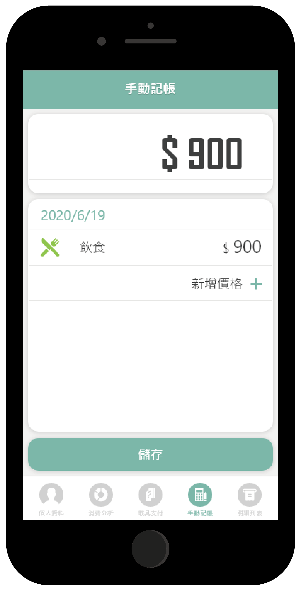
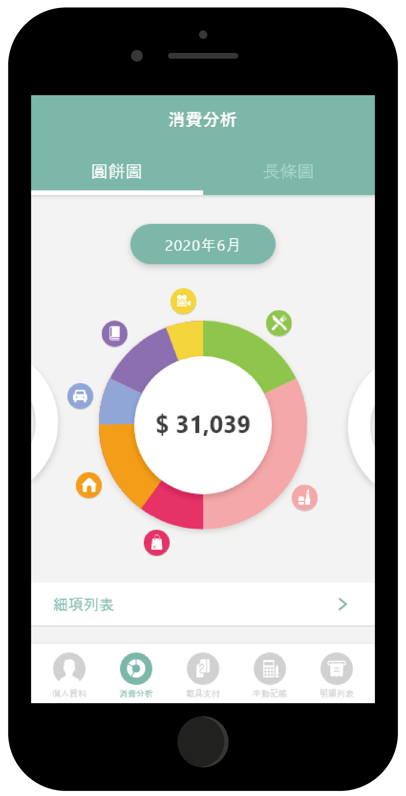
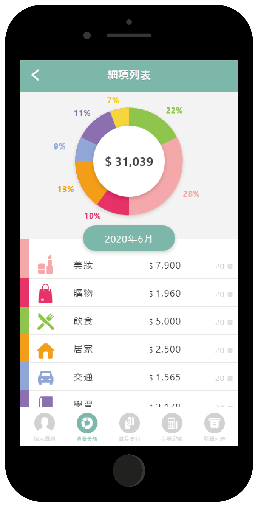
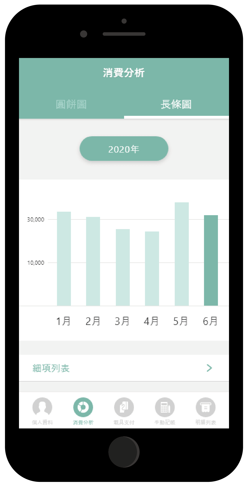
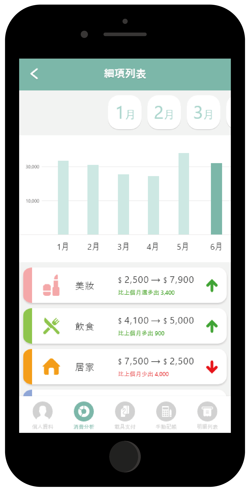

改善問題
現代的網購方便又快速，許多人常在網拍上看到喜歡的東西就失手結帳，到了月底常常會發現自己的錢都不夠用。市面上有許多記帳APP，我們從中發現問題並改善。
設計理念
讓使用者可以快速瀏覽明細，以及馬上看到所有支出的分類，檢視自己的金錢花在哪部分最多。
介面設計

明細列表
可查看每個月個花費明細，有特別幫使用者分類手動明細及電子明細這兩項。

手動記帳
使用者輸入完金額後，系統便會紀錄上次的輸入金額讓使用者可以不必再重複輸入。


圓餅圖
讓使用者直接看到當月的支出比例，一眼也能看出自己最常花費的部分以及這個月的總金額是多少，詳細列表裡面有更各分類所花費的金額及筆數。


長條圖
讓使用者能看到每個月的支出高低，也能比較當月花費是否高於或低於上個月的花費，而詳細列表裡面會有系統幫使用者比較各分類在上個月和當月的詳細數據。